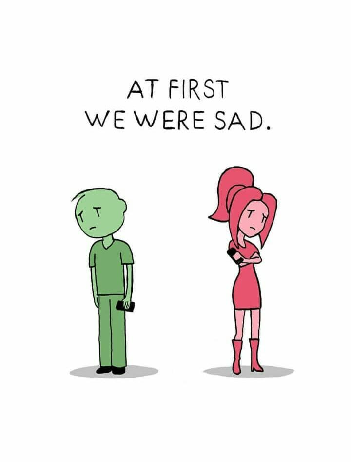
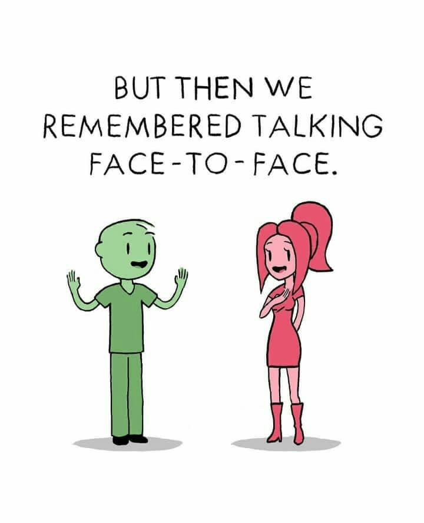

Hi Folk's... Crazy Internet || Crazy Jams || Crazy People
If you’re lucky, you can get your internet speeds back up to snuff quickly and stress-free. But, if not, you can at least try to put a good spin on it: As long as your work isn’t too bandwidth-intensive, slow internet could actually make you more productive. After all, if Facebook takes a minute to load, you’re a lot less likely to pop over for a “quick break” (that turns into an hour-long photo-fest) when you’re supposed to be working on that term paper.


If you’re lucky, you can get your internet speeds back up to snuff quickly and stress-free. But, if not, you can at least try to put a good spin on it: As long as your work isn’t too bandwidth-intensive, slow internet could actually make you more productive. After all, if Facebook takes a minute to load, you’re a lot less likely to pop over for a “quick break” (that turns into an hour-long photo-fest) when you’re supposed to be working on that term paper.
Be prepared for Jamzz to drive you crazy ... If you don't have an internet connection and listen to music for a while, then want to do something ... Have you ever wondered why your parents can't understand why leaving your phone at home is such a big deal, or what it's like to have a ... At the center of our crazy dreams for this band is just a want to connect with the ...